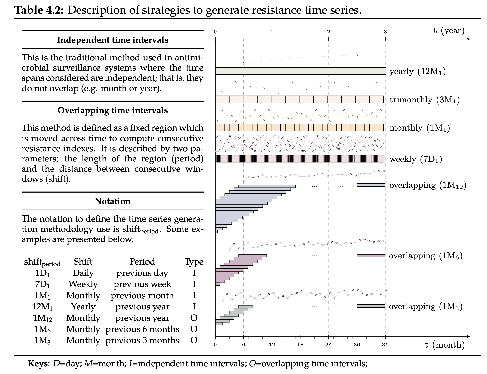

<!DOCTYPE html>
<html class="writer-html5" lang="en" >
<head>
  <meta charset="utf-8" />
  
  <meta name="viewport" content="width=device-width, initial-scale=1.0" />
  
  <title>ASAI - Timeseries &mdash; pyamr 0.0.1 documentation</title>
  

  
  <link rel="stylesheet" href="../../_static/css/theme.css" type="text/css" />
  <link rel="stylesheet" href="../../_static/pygments.css" type="text/css" />
  <link rel="stylesheet" href="../../_static/gallery.css" type="text/css" />
  <link rel="stylesheet" href="../../_static/gallery-binder.css" type="text/css" />
  <link rel="stylesheet" href="../../_static/gallery-dataframe.css" type="text/css" />
  <link rel="stylesheet" href="../../_static/gallery-rendered-html.css" type="text/css" />

  
  

  
  

  

  
  <!--[if lt IE 9]>
    <script src="../../_static/js/html5shiv.min.js"></script>
  <![endif]-->
  
    
      <script type="text/javascript" id="documentation_options" data-url_root="../../" src="../../_static/documentation_options.js"></script>
        <script src="../../_static/jquery.js"></script>
        <script src="../../_static/underscore.js"></script>
        <script src="../../_static/doctools.js"></script>
    
    <script type="text/javascript" src="../../_static/js/theme.js"></script>

    
    <link rel="index" title="Index" href="../../genindex.html" />
    <link rel="search" title="Search" href="../../search.html" />
    <link rel="next" title="SARI - Timeseries" href="plot_temporal_sari.html" />
    <link rel="prev" title="ASAI - Multiple" href="plot_spectrum_multiple.html" /> 
</head>

<body class="wy-body-for-nav">

   
  <div class="wy-grid-for-nav">
    
    <nav data-toggle="wy-nav-shift" class="wy-nav-side">
      <div class="wy-side-scroll">
        <div class="wy-side-nav-search" >
          

          
            <a href="../../index.html" class="icon icon-home"> pyamr
          

          
          </a>

          
            
            
          

          
<div role="search">
  <form id="rtd-search-form" class="wy-form" action="../../search.html" method="get">
    <input type="text" name="q" placeholder="Search docs" />
    <input type="hidden" name="check_keywords" value="yes" />
    <input type="hidden" name="area" value="default" />
  </form>
</div>

          
        </div>

        
        <div class="wy-menu wy-menu-vertical" data-spy="affix" role="navigation" aria-label="main navigation">
          
            
            
              
            
            
              <p class="caption"><span class="caption-text">Tutorial</span></p>
<ul>
<li class="toctree-l1"><a class="reference internal" href="../../usage/introduction.html">Introduction</a></li>
<li class="toctree-l1"><a class="reference internal" href="../../usage/installation.html">Installation</a></li>
<li class="toctree-l1"><a class="reference internal" href="../../usage/quickstart.html">Quickstart</a></li>
<li class="toctree-l1"><a class="reference internal" href="../../usage/registries.html">Registries</a></li>
<li class="toctree-l1"><a class="reference internal" href="../../usage/todo.html">Future Actions</a></li>
</ul>
<p class="caption"><span class="caption-text">Example Galleries</span></p>
<ul class="current">
<li class="toctree-l1"><a class="reference internal" href="../tutorial/index.html">Tutorial</a></li>
<li class="toctree-l1 current"><a class="reference internal" href="index.html">Examples with AMR indexes</a><ul class="current">
<li class="toctree-l2"><a class="reference internal" href="plot_antibiogram_01.html">SARI - Antibiogram (overall)</a></li>
<li class="toctree-l2"><a class="reference internal" href="plot_antibiogram_02.html">SARI - Antibiogram (by culture)</a></li>
<li class="toctree-l2"><a class="reference internal" href="plot_clustermap_01.html">SARI - Clustermap (overall)</a></li>
<li class="toctree-l2"><a class="reference internal" href="plot_clustermap_02.html">SARI - Clustermap (by culture)</a></li>
<li class="toctree-l2"><a class="reference internal" href="plot_relmap_01.html">SARI - Relplot (overall)</a></li>
<li class="toctree-l2"><a class="reference internal" href="plot_relmap_02.html">SARI - Relplot (by culture)</a></li>
<li class="toctree-l2"><a class="reference internal" href="plot_spectrum_gramtype.html">ASAI - gram type</a></li>
<li class="toctree-l2"><a class="reference internal" href="plot_spectrum_multiple.html">ASAI - Multiple</a></li>
<li class="toctree-l2 current"><a class="current reference internal" href="#">ASAI - Timeseries</a><ul>
<li class="toctree-l3"><a class="reference internal" href="#independent-time-intervals-iti">Independent Time Intervals (ITI)</a></li>
<li class="toctree-l3"><a class="reference internal" href="#overlapping-time-intervals-oti">Overlapping Time Intervals (OTI)</a></li>
</ul>
</li>
<li class="toctree-l2"><a class="reference internal" href="plot_temporal_sari.html">SARI - Timeseries</a></li>
<li class="toctree-l2"><a class="reference internal" href="plot_wls_basic.html">SART - through WLS</a></li>
</ul>
</li>
<li class="toctree-l1"><a class="reference internal" href="../forecasting/index.html">Examples with TSA</a></li>
<li class="toctree-l1"><a class="reference internal" href="../reports/index.html">Reports</a></li>
<li class="toctree-l1"><a class="reference internal" href="../visualization/index.html">Visualization</a></li>
</ul>
<p class="caption"><span class="caption-text">API</span></p>
<ul>
<li class="toctree-l1"><a class="reference internal" href="../../_apidoc/modules.html">pyamr</a></li>
</ul>

            
          
        </div>
        
      </div>
    </nav>

    <section data-toggle="wy-nav-shift" class="wy-nav-content-wrap">

      
      <nav class="wy-nav-top" aria-label="top navigation">
        
          <i data-toggle="wy-nav-top" class="fa fa-bars"></i>
          <a href="../../index.html">pyamr</a>
        
      </nav>


      <div class="wy-nav-content">
        
        <div class="rst-content">
        
          


<div role="navigation" aria-label="breadcrumbs navigation">

  <ul class="wy-breadcrumbs">
    
      <li><a href="../../index.html" class="icon icon-home"></a> &raquo;</li>
        
          <li><a href="index.html">Examples with AMR indexes</a> &raquo;</li>
        
      <li>ASAI - Timeseries</li>
    
    
      <li class="wy-breadcrumbs-aside">
        
          
            <a href="../../_sources/_examples/indexes/plot_temporal_asai.rst.txt" rel="nofollow"> View page source</a>
          
        
      </li>
    
  </ul>

  
  <hr/>
</div>
          <div role="main" class="document" itemscope="itemscope" itemtype="http://schema.org/Article">
           <div itemprop="articleBody">
            
  <div class="sphx-glr-download-link-note admonition note">
<p class="admonition-title">Note</p>
<p>Click <a class="reference internal" href="#sphx-glr-download-examples-indexes-plot-temporal-asai-py"><span class="std std-ref">here</span></a>
to download the full example code</p>
</div>
<div class="sphx-glr-example-title section" id="asai-timeseries">
<span id="sphx-glr-examples-indexes-plot-temporal-asai-py"></span><h1>ASAI - Timeseries<a class="headerlink" href="#asai-timeseries" title="Permalink to this headline">¶</a></h1>
<p>In order to study the temporal evolution of AMR, it is necessary to generate a resistance
time series from the susceptibility test data. This is often achieved by computing the
resistance index on consecutive partitions of the data. Note that each partition contains
the susceptibility tests required to compute a resistance index. The traditional strategy
of dealing with partitions considers independent time intervals (see yearly, monthly or
weekly time series in Table 4.2). Unfortunately, this strategy forces to trade-off between
granularity (level of detail) and accuracy. On one side, weekly time series are highly
granular  but inaccurate. On the other hand, yearly time series are accurate but rough.
Note that the granularity is represented by the number of observations in a time series
while the accuracy is closely related with the number of susceptibility tests used to compute
the resistance index. Conversely, the overlapping time intervals strategy drops such dependence
by defining a window of fixed size which is moved across time. The length of the window is
denoted as period and the time step as shift. For instance, three time series obtained using
the overlapping time intervals strategy with a monthly shift (1M) and window lengths of 12,
6 and 3 have been presented for the sake of clarity (see 1M<sub>12</sub>, 1M<sub>6</sub> and 1M<sub>3</sub> in Table 4.2).</p>
<a class="reference internal image-reference" href="../../_images/timeseries-generation.png"></a>
<p>The notation to define the time series generation methodology (SHIFT<sub>period</sub>) is described with
various examples in Table 4.2. For instance, 1M<sub>12</sub> defines a time series with weekly resistance
indexes (7D) calculated using the microbiology records available for the previous four weeks
(4x7D). It is important to note that some notations are equivalent representations of the same
susceptibility data at different granularities, hence their trends are comparable. As an example,
the trend estimated for 1M<sub>1</sub> should be approximately thirty times the trend estimated for 1D<sub>30</sub>.</p>
<p>Let’s see how to compute ASAI time series with examples.</p>
<p>We first load the data and select one single pair for clarity.</p>
<div class="highlight-default notranslate"><table class="highlighttable"><tr><td class="linenos"><div class="linenodiv"><pre><span class="normal"> 53</span>
<span class="normal"> 54</span>
<span class="normal"> 55</span>
<span class="normal"> 56</span>
<span class="normal"> 57</span>
<span class="normal"> 58</span>
<span class="normal"> 59</span>
<span class="normal"> 60</span>
<span class="normal"> 61</span>
<span class="normal"> 62</span>
<span class="normal"> 63</span>
<span class="normal"> 64</span>
<span class="normal"> 65</span>
<span class="normal"> 66</span>
<span class="normal"> 67</span>
<span class="normal"> 68</span>
<span class="normal"> 69</span>
<span class="normal"> 70</span>
<span class="normal"> 71</span>
<span class="normal"> 72</span>
<span class="normal"> 73</span>
<span class="normal"> 74</span>
<span class="normal"> 75</span>
<span class="normal"> 76</span>
<span class="normal"> 77</span>
<span class="normal"> 78</span>
<span class="normal"> 79</span>
<span class="normal"> 80</span>
<span class="normal"> 81</span>
<span class="normal"> 82</span>
<span class="normal"> 83</span>
<span class="normal"> 84</span>
<span class="normal"> 85</span>
<span class="normal"> 86</span>
<span class="normal"> 87</span>
<span class="normal"> 88</span>
<span class="normal"> 89</span>
<span class="normal"> 90</span>
<span class="normal"> 91</span>
<span class="normal"> 92</span>
<span class="normal"> 93</span>
<span class="normal"> 94</span>
<span class="normal"> 95</span>
<span class="normal"> 96</span>
<span class="normal"> 97</span>
<span class="normal"> 98</span>
<span class="normal"> 99</span>
<span class="normal">100</span>
<span class="normal">101</span>
<span class="normal">102</span>
<span class="normal">103</span>
<span class="normal">104</span>
<span class="normal">105</span>
<span class="normal">106</span>
<span class="normal">107</span>
<span class="normal">108</span>
<span class="normal">109</span>
<span class="normal">110</span>
<span class="normal">111</span>
<span class="normal">112</span>
<span class="normal">113</span>
<span class="normal">114</span>
<span class="normal">115</span>
<span class="normal">116</span>
<span class="normal">117</span>
<span class="normal">118</span>
<span class="normal">119</span>
<span class="normal">120</span>
<span class="normal">121</span>
<span class="normal">122</span>
<span class="normal">123</span>
<span class="normal">124</span>
<span class="normal">125</span>
<span class="normal">126</span>
<span class="normal">127</span>
<span class="normal">128</span>
<span class="normal">129</span>
<span class="normal">130</span>
<span class="normal">131</span>
<span class="normal">132</span>
<span class="normal">133</span>
<span class="normal">134</span>
<span class="normal">135</span>
<span class="normal">136</span>
<span class="normal">137</span>
<span class="normal">138</span>
<span class="normal">139</span>
<span class="normal">140</span>
<span class="normal">141</span>
<span class="normal">142</span></pre></div></td><td class="code"><div class="highlight"><pre><span></span> <span class="c1"># Libraries</span>
 <span class="kn">import</span> <span class="nn">numpy</span> <span class="k">as</span> <span class="nn">np</span>
 <span class="kn">import</span> <span class="nn">pandas</span> <span class="k">as</span> <span class="nn">pd</span>
 <span class="kn">import</span> <span class="nn">seaborn</span> <span class="k">as</span> <span class="nn">sns</span>
 <span class="kn">import</span> <span class="nn">matplotlib</span> <span class="k">as</span> <span class="nn">mpl</span>
 <span class="kn">import</span> <span class="nn">matplotlib.pyplot</span> <span class="k">as</span> <span class="nn">plt</span>

 <span class="c1"># Import own libraries</span>
 <span class="kn">from</span> <span class="nn">pyamr.core.sari</span> <span class="kn">import</span> <span class="n">sari</span>
 <span class="kn">from</span> <span class="nn">pyamr.core.asai</span> <span class="kn">import</span> <span class="n">asai</span>
 <span class="kn">from</span> <span class="nn">pyamr.datasets.load</span> <span class="kn">import</span> <span class="n">load_data_nhs</span>


 <span class="c1"># -------------------------</span>
 <span class="c1"># Methods</span>
 <span class="c1"># -------------------------</span>
 <span class="k">def</span> <span class="nf">create_mapper</span><span class="p">(</span><span class="n">dataframe</span><span class="p">,</span> <span class="n">column_key</span><span class="p">,</span> <span class="n">column_value</span><span class="p">):</span>
     <span class="sd">&quot;&quot;&quot;This method constructs a mapper</span>

<span class="sd">     Parameters</span>
<span class="sd">     ----------</span>
<span class="sd">     dataframe: dataframe-like</span>
<span class="sd">     The dataframe from which the columns are extracted</span>

<span class="sd">     column_key: string-like</span>
<span class="sd">     The name of the column with the values for the keys of the mapper</span>

<span class="sd">     column_value: string-like</span>
<span class="sd">     The name of the column with the values for the values of the mapper</span>

<span class="sd">     Returns</span>
<span class="sd">     -------</span>
<span class="sd">     dictionary</span>
<span class="sd">     &quot;&quot;&quot;</span>
     <span class="n">dataframe</span> <span class="o">=</span> <span class="n">dataframe</span><span class="p">[[</span><span class="n">column_key</span><span class="p">,</span> <span class="n">column_value</span><span class="p">]]</span>
     <span class="n">dataframe</span> <span class="o">=</span> <span class="n">dataframe</span><span class="o">.</span><span class="n">drop_duplicates</span><span class="p">()</span>
     <span class="k">return</span> <span class="nb">dict</span><span class="p">(</span><span class="nb">zip</span><span class="p">(</span><span class="n">dataframe</span><span class="p">[</span><span class="n">column_key</span><span class="p">],</span> <span class="n">dataframe</span><span class="p">[</span><span class="n">column_value</span><span class="p">]))</span>

 <span class="c1"># -------------------------</span>
 <span class="c1"># Configuration</span>
 <span class="c1"># -------------------------</span>
 <span class="c1"># Configure seaborn style (context=talk)</span>
 <span class="n">sns</span><span class="o">.</span><span class="n">set</span><span class="p">(</span><span class="n">style</span><span class="o">=</span><span class="s2">&quot;white&quot;</span><span class="p">)</span>

 <span class="c1"># Set matplotlib</span>
 <span class="n">mpl</span><span class="o">.</span><span class="n">rcParams</span><span class="p">[</span><span class="s1">&#39;xtick.labelsize&#39;</span><span class="p">]</span> <span class="o">=</span> <span class="mi">9</span>
 <span class="n">mpl</span><span class="o">.</span><span class="n">rcParams</span><span class="p">[</span><span class="s1">&#39;ytick.labelsize&#39;</span><span class="p">]</span> <span class="o">=</span> <span class="mi">9</span>
 <span class="n">mpl</span><span class="o">.</span><span class="n">rcParams</span><span class="p">[</span><span class="s1">&#39;axes.titlesize&#39;</span><span class="p">]</span> <span class="o">=</span> <span class="mi">11</span>
 <span class="n">mpl</span><span class="o">.</span><span class="n">rcParams</span><span class="p">[</span><span class="s1">&#39;legend.fontsize&#39;</span><span class="p">]</span> <span class="o">=</span> <span class="mi">9</span>

 <span class="c1"># Pandas configuration</span>
 <span class="n">pd</span><span class="o">.</span><span class="n">set_option</span><span class="p">(</span><span class="s1">&#39;display.max_colwidth&#39;</span><span class="p">,</span> <span class="mi">40</span><span class="p">)</span>
 <span class="n">pd</span><span class="o">.</span><span class="n">set_option</span><span class="p">(</span><span class="s1">&#39;display.width&#39;</span><span class="p">,</span> <span class="mi">300</span><span class="p">)</span>
 <span class="n">pd</span><span class="o">.</span><span class="n">set_option</span><span class="p">(</span><span class="s1">&#39;display.precision&#39;</span><span class="p">,</span> <span class="mi">4</span><span class="p">)</span>

 <span class="c1"># Numpy configuration</span>
 <span class="n">np</span><span class="o">.</span><span class="n">set_printoptions</span><span class="p">(</span><span class="n">precision</span><span class="o">=</span><span class="mi">2</span><span class="p">)</span>

 <span class="c1"># -------------------------------------------</span>
 <span class="c1"># Constants</span>
 <span class="c1"># -------------------------------------------</span>
 <span class="c1"># Create grouper</span>
 <span class="n">grouper</span> <span class="o">=</span> <span class="n">pd</span><span class="o">.</span><span class="n">Grouper</span><span class="p">(</span><span class="n">freq</span><span class="o">=</span><span class="s1">&#39;3M&#39;</span><span class="p">,</span> <span class="n">key</span><span class="o">=</span><span class="s1">&#39;date_received&#39;</span><span class="p">)</span>

 <span class="c1"># Define window</span>
 <span class="n">window</span> <span class="o">=</span> <span class="mi">12</span>

 <span class="c1"># -------------------------------------------</span>
 <span class="c1"># Load data</span>
 <span class="c1"># -------------------------------------------</span>
 <span class="c1"># Load data</span>
 <span class="n">data</span><span class="p">,</span> <span class="n">antimicrobials</span><span class="p">,</span> <span class="n">microorganisms</span> <span class="o">=</span> <span class="n">load_data_nhs</span><span class="p">()</span>

 <span class="c1"># Show</span>
 <span class="nb">print</span><span class="p">(</span><span class="s2">&quot;</span><span class="se">\n</span><span class="s2">Data:&quot;</span><span class="p">)</span>
 <span class="nb">print</span><span class="p">(</span><span class="n">data</span><span class="p">)</span>
 <span class="nb">print</span><span class="p">(</span><span class="s2">&quot;</span><span class="se">\n</span><span class="s2">Columns:&quot;</span><span class="p">)</span>
 <span class="nb">print</span><span class="p">(</span><span class="n">data</span><span class="o">.</span><span class="n">columns</span><span class="p">)</span>
 <span class="nb">print</span><span class="p">(</span><span class="s2">&quot;</span><span class="se">\n</span><span class="s2">Dtypes:&quot;</span><span class="p">)</span>
 <span class="nb">print</span><span class="p">(</span><span class="n">data</span><span class="o">.</span><span class="n">dtypes</span><span class="p">)</span>

 <span class="c1"># Filter</span>
 <span class="n">idxs_spec</span> <span class="o">=</span> <span class="n">data</span><span class="o">.</span><span class="n">specimen_code</span><span class="o">.</span><span class="n">isin</span><span class="p">([</span><span class="s1">&#39;URICUL&#39;</span><span class="p">])</span>
 <span class="n">idxs_abxs</span> <span class="o">=</span> <span class="n">data</span><span class="o">.</span><span class="n">antimicrobial_code</span><span class="o">.</span><span class="n">isin</span><span class="p">([</span><span class="s1">&#39;AAUG&#39;</span><span class="p">])</span>

 <span class="c1"># Filter</span>
 <span class="n">data</span> <span class="o">=</span> <span class="n">data</span><span class="p">[</span><span class="n">idxs_spec</span> <span class="o">&amp;</span> <span class="n">idxs_abxs</span><span class="p">]</span>

 <span class="c1"># Filter dates (2016-2018 missing)</span>
 <span class="n">data</span> <span class="o">=</span> <span class="n">data</span><span class="p">[</span><span class="n">data</span><span class="o">.</span><span class="n">date_received</span><span class="o">.</span><span class="n">between</span><span class="p">(</span><span class="s1">&#39;2008-01-01&#39;</span><span class="p">,</span> <span class="s1">&#39;2016-12-31&#39;</span><span class="p">)]</span>
</pre></div>
</td></tr></table></div>
<p class="sphx-glr-script-out">Out:</p>
<div class="sphx-glr-script-out highlight-none notranslate"><div class="highlight"><pre><span></span>Data:
           date_received         date_outcome patient_id laboratory_number specimen_code  ...       antimicrobial_name sensitivity_method sensitivity  mic reported
0    2009-01-03 00:00:00                  NaN      20091           X428501        BLDCUL  ...                 amikacin                NaN   sensitive  NaN      NaN
1    2009-01-03 00:00:00                  NaN      20091           X428501        BLDCUL  ...              amoxycillin                NaN   resistant  NaN      NaN
2    2009-01-03 00:00:00                  NaN      20091           X428501        BLDCUL  ...                augmentin                NaN   sensitive  NaN      NaN
3    2009-01-03 00:00:00                  NaN      20091           X428501        BLDCUL  ...                aztreonam                NaN   sensitive  NaN      NaN
4    2009-01-03 00:00:00                  NaN      20091           X428501        BLDCUL  ...              ceftazidime                NaN   sensitive  NaN      NaN
...                  ...                  ...        ...               ...           ...  ...                      ...                ...         ...  ...      ...
7929 2021-01-21 23:56:00  2021-01-22 00:00:00     199863          H2230229         FBCUL  ...               gentamicin                 DD   resistant  NaN        Y
7930 2021-01-21 23:56:00  2021-01-22 00:00:00     199863          H2230229         FBCUL  ...                meropenem                 DD   sensitive  NaN        Y
7931 2021-01-21 23:56:00  2021-01-22 00:00:00     199863          H2230229         FBCUL  ...  piperacillin-tazobactam                 DD   sensitive  NaN        N
7932 2021-01-21 23:56:00  2021-01-22 00:00:00     199863          H2230229         FBCUL  ...               temocillin                 DD   sensitive  NaN        N
7933 2021-01-21 23:56:00  2021-01-22 00:00:00     199863          H2230229         FBCUL  ...              tigecycline                 DD   sensitive  NaN        N

[3770034 rows x 15 columns]

Columns:
Index([&#39;date_received&#39;, &#39;date_outcome&#39;, &#39;patient_id&#39;, &#39;laboratory_number&#39;, &#39;specimen_code&#39;, &#39;specimen_name&#39;, &#39;specimen_description&#39;, &#39;microorganism_code&#39;, &#39;microorganism_name&#39;, &#39;antimicrobial_code&#39;, &#39;antimicrobial_name&#39;, &#39;sensitivity_method&#39;, &#39;sensitivity&#39;, &#39;mic&#39;, &#39;reported&#39;], dtype=&#39;object&#39;)

Dtypes:
date_received           datetime64[ns]
date_outcome                    object
patient_id                      object
laboratory_number               object
specimen_code                   object
specimen_name                   object
specimen_description            object
microorganism_code              object
microorganism_name              object
antimicrobial_code              object
antimicrobial_name              object
sensitivity_method              object
sensitivity                     object
mic                             object
reported                        object
dtype: object
</pre></div>
</div>
<div class="section" id="independent-time-intervals-iti">
<h2>Independent Time Intervals (ITI)<a class="headerlink" href="#independent-time-intervals-iti" title="Permalink to this headline">¶</a></h2>
<p>This is the traditional method used in antimicrobial surveillance systems where the
time spans considered are independent; that is, they do not overlap (e.g. month or year).</p>
<p>Keep only those subsepecies that appears consistently in all times.</p>
<div class="highlight-default notranslate"><table class="highlighttable"><tr><td class="linenos"><div class="linenodiv"><pre><span class="normal">158</span>
<span class="normal">159</span>
<span class="normal">160</span>
<span class="normal">161</span>
<span class="normal">162</span>
<span class="normal">163</span>
<span class="normal">164</span>
<span class="normal">165</span>
<span class="normal">166</span>
<span class="normal">167</span>
<span class="normal">168</span>
<span class="normal">169</span>
<span class="normal">170</span>
<span class="normal">171</span>
<span class="normal">172</span>
<span class="normal">173</span>
<span class="normal">174</span>
<span class="normal">175</span>
<span class="normal">176</span>
<span class="normal">177</span>
<span class="normal">178</span>
<span class="normal">179</span>
<span class="normal">180</span>
<span class="normal">181</span>
<span class="normal">182</span>
<span class="normal">183</span>
<span class="normal">184</span>
<span class="normal">185</span>
<span class="normal">186</span>
<span class="normal">187</span>
<span class="normal">188</span>
<span class="normal">189</span>
<span class="normal">190</span>
<span class="normal">191</span>
<span class="normal">192</span>
<span class="normal">193</span>
<span class="normal">194</span>
<span class="normal">195</span>
<span class="normal">196</span>
<span class="normal">197</span>
<span class="normal">198</span>
<span class="normal">199</span>
<span class="normal">200</span>
<span class="normal">201</span>
<span class="normal">202</span>
<span class="normal">203</span>
<span class="normal">204</span>
<span class="normal">205</span>
<span class="normal">206</span>
<span class="normal">207</span>
<span class="normal">208</span>
<span class="normal">209</span>
<span class="normal">210</span>
<span class="normal">211</span>
<span class="normal">212</span>
<span class="normal">213</span>
<span class="normal">214</span>
<span class="normal">215</span>
<span class="normal">216</span>
<span class="normal">217</span>
<span class="normal">218</span>
<span class="normal">219</span>
<span class="normal">220</span>
<span class="normal">221</span>
<span class="normal">222</span>
<span class="normal">223</span>
<span class="normal">224</span>
<span class="normal">225</span>
<span class="normal">226</span>
<span class="normal">227</span>
<span class="normal">228</span>
<span class="normal">229</span>
<span class="normal">230</span>
<span class="normal">231</span>
<span class="normal">232</span>
<span class="normal">233</span>
<span class="normal">234</span>
<span class="normal">235</span>
<span class="normal">236</span>
<span class="normal">237</span>
<span class="normal">238</span>
<span class="normal">239</span>
<span class="normal">240</span>
<span class="normal">241</span>
<span class="normal">242</span>
<span class="normal">243</span>
<span class="normal">244</span>
<span class="normal">245</span>
<span class="normal">246</span>
<span class="normal">247</span>
<span class="normal">248</span>
<span class="normal">249</span>
<span class="normal">250</span>
<span class="normal">251</span>
<span class="normal">252</span>
<span class="normal">253</span></pre></div></td><td class="code"><div class="highlight"><pre><span></span> <span class="c1"># -------------------------------------------</span>
 <span class="c1"># Compute ITI sari (temporal)</span>
 <span class="c1"># -------------------------------------------</span>
 <span class="c1"># Create DataFrame</span>
 <span class="n">iti</span> <span class="o">=</span> <span class="n">data</span><span class="o">.</span><span class="n">groupby</span><span class="p">([</span><span class="n">grouper</span><span class="p">,</span>
                     <span class="s1">&#39;specimen_code&#39;</span><span class="p">,</span>
                     <span class="s1">&#39;microorganism_code&#39;</span><span class="p">,</span>
                     <span class="s1">&#39;antimicrobial_code&#39;</span><span class="p">,</span>
                     <span class="s1">&#39;sensitivity&#39;</span><span class="p">])</span> \
           <span class="o">.</span><span class="n">size</span><span class="p">()</span><span class="o">.</span><span class="n">unstack</span><span class="p">()</span><span class="o">.</span><span class="n">fillna</span><span class="p">(</span><span class="mi">0</span><span class="p">)</span> \
           <span class="o">.</span><span class="n">reset_index</span><span class="p">()</span>

 <span class="c1"># Compute frequency</span>
 <span class="n">iti</span><span class="p">[</span><span class="s1">&#39;freq&#39;</span><span class="p">]</span> <span class="o">=</span> <span class="n">iti</span><span class="o">.</span><span class="n">sum</span><span class="p">(</span><span class="n">axis</span><span class="o">=</span><span class="mi">1</span><span class="p">)</span>

 <span class="c1"># Compute sari</span>
 <span class="n">iti</span><span class="p">[</span><span class="s1">&#39;sari&#39;</span><span class="p">]</span> <span class="o">=</span> <span class="n">sari</span><span class="p">(</span><span class="n">iti</span><span class="p">,</span> <span class="n">strategy</span><span class="o">=</span><span class="s1">&#39;hard&#39;</span><span class="p">)</span>

 <span class="c1"># -------------------------</span>
 <span class="c1"># Format dataframe</span>
 <span class="c1"># -------------------------</span>
 <span class="c1"># Create mappers</span>
 <span class="n">abx_map</span> <span class="o">=</span> <span class="n">create_mapper</span><span class="p">(</span><span class="n">antimicrobials</span><span class="p">,</span> <span class="s1">&#39;antimicrobial_code&#39;</span><span class="p">,</span> <span class="s1">&#39;category&#39;</span><span class="p">)</span>
 <span class="n">org_map</span> <span class="o">=</span> <span class="n">create_mapper</span><span class="p">(</span><span class="n">microorganisms</span><span class="p">,</span> <span class="s1">&#39;microorganism_code&#39;</span><span class="p">,</span> <span class="s1">&#39;genus&#39;</span><span class="p">)</span>
 <span class="n">grm_map</span> <span class="o">=</span> <span class="n">create_mapper</span><span class="p">(</span><span class="n">microorganisms</span><span class="p">,</span> <span class="s1">&#39;microorganism_code&#39;</span><span class="p">,</span> <span class="s1">&#39;gram_stain&#39;</span><span class="p">)</span>

 <span class="n">iti</span> <span class="o">=</span> <span class="n">iti</span><span class="p">[[</span><span class="s1">&#39;date_received&#39;</span><span class="p">,</span> <span class="s1">&#39;freq&#39;</span><span class="p">,</span> <span class="s1">&#39;sari&#39;</span><span class="p">,</span> <span class="s1">&#39;antimicrobial_code&#39;</span><span class="p">,</span> <span class="s1">&#39;microorganism_code&#39;</span><span class="p">]]</span>

 <span class="c1"># Include categories</span>
 <span class="n">iti</span><span class="p">[</span><span class="s1">&#39;category&#39;</span><span class="p">]</span> <span class="o">=</span> <span class="n">iti</span><span class="p">[</span><span class="s1">&#39;antimicrobial_code&#39;</span><span class="p">]</span><span class="o">.</span><span class="n">map</span><span class="p">(</span><span class="n">abx_map</span><span class="p">)</span>
 <span class="n">iti</span><span class="p">[</span><span class="s1">&#39;genus&#39;</span><span class="p">]</span> <span class="o">=</span> <span class="n">iti</span><span class="p">[</span><span class="s1">&#39;microorganism_code&#39;</span><span class="p">]</span><span class="o">.</span><span class="n">map</span><span class="p">(</span><span class="n">org_map</span><span class="p">)</span>
 <span class="n">iti</span><span class="p">[</span><span class="s1">&#39;gram&#39;</span><span class="p">]</span> <span class="o">=</span> <span class="n">iti</span><span class="p">[</span><span class="s1">&#39;microorganism_code&#39;</span><span class="p">]</span><span class="o">.</span><span class="n">map</span><span class="p">(</span><span class="n">grm_map</span><span class="p">)</span>

 <span class="c1"># Empty grams are a new category (unknown - u)</span>
 <span class="n">iti</span><span class="o">.</span><span class="n">gram</span> <span class="o">=</span> <span class="n">iti</span><span class="o">.</span><span class="n">gram</span><span class="o">.</span><span class="n">fillna</span><span class="p">(</span><span class="s1">&#39;u&#39;</span><span class="p">)</span>

 <span class="nb">print</span><span class="p">(</span><span class="n">iti</span><span class="p">[</span><span class="n">iti</span><span class="o">.</span><span class="n">gram</span><span class="o">==</span><span class="s1">&#39;u&#39;</span><span class="p">]</span><span class="o">.</span><span class="n">microorganism_code</span><span class="o">.</span><span class="n">unique</span><span class="p">())</span>

 <span class="c1"># -------------------------</span>
 <span class="c1"># Compute ASAI</span>
 <span class="c1"># -------------------------</span>
 <span class="n">iti</span> <span class="o">=</span> <span class="n">iti</span><span class="o">.</span><span class="n">rename</span><span class="p">(</span><span class="n">columns</span><span class="o">=</span><span class="p">{</span>
     <span class="s1">&#39;microorganism_code&#39;</span><span class="p">:</span> <span class="s1">&#39;SPECIE&#39;</span><span class="p">,</span>
     <span class="s1">&#39;sari&#39;</span><span class="p">:</span> <span class="s1">&#39;RESISTANCE&#39;</span><span class="p">,</span>
     <span class="s1">&#39;genus&#39;</span><span class="p">:</span> <span class="s1">&#39;GENUS&#39;</span>
 <span class="p">})</span>


 <span class="n">fig</span><span class="p">,</span> <span class="n">axes</span> <span class="o">=</span> <span class="n">plt</span><span class="o">.</span><span class="n">subplots</span><span class="p">(</span><span class="mi">1</span><span class="p">,</span> <span class="mi">2</span><span class="p">,</span> <span class="n">figsize</span><span class="o">=</span><span class="p">(</span><span class="mi">10</span><span class="p">,</span> <span class="mi">3</span><span class="p">),</span> <span class="n">sharey</span><span class="o">=</span><span class="kc">True</span><span class="p">)</span>

 <span class="c1"># Variable for filtering</span>
 <span class="n">s</span> <span class="o">=</span> <span class="n">pd</span><span class="o">.</span><span class="n">crosstab</span><span class="p">(</span><span class="n">iti</span><span class="p">[</span><span class="s1">&#39;SPECIE&#39;</span><span class="p">],</span> <span class="n">iti</span><span class="p">[</span><span class="s1">&#39;date_received&#39;</span><span class="p">])</span>

 <span class="c1"># Create aux (non filtered)</span>
 <span class="n">aux</span> <span class="o">=</span> <span class="n">iti</span><span class="o">.</span><span class="n">copy</span><span class="p">(</span><span class="n">deep</span><span class="o">=</span><span class="kc">True</span><span class="p">)</span>
 <span class="n">aux</span> <span class="o">=</span> <span class="n">aux</span><span class="o">.</span><span class="n">groupby</span><span class="p">([</span><span class="s1">&#39;date_received&#39;</span><span class="p">,</span>
                    <span class="s1">&#39;antimicrobial_code&#39;</span><span class="p">,</span>
                    <span class="s1">&#39;gram&#39;</span><span class="p">])</span>\
          <span class="o">.</span><span class="n">apply</span><span class="p">(</span><span class="n">asai</span><span class="p">,</span> <span class="n">weights</span><span class="o">=</span><span class="s1">&#39;uniform&#39;</span><span class="p">,</span> <span class="n">threshold</span><span class="o">=</span><span class="mf">0.5</span><span class="p">)</span>

 <span class="c1"># Create aux (filtered)</span>
 <span class="n">aux2</span> <span class="o">=</span> <span class="n">iti</span><span class="o">.</span><span class="n">copy</span><span class="p">(</span><span class="n">deep</span><span class="o">=</span><span class="kc">True</span><span class="p">)</span>
 <span class="n">aux2</span> <span class="o">=</span> <span class="n">aux2</span><span class="p">[</span><span class="n">aux2</span><span class="p">[</span><span class="s1">&#39;SPECIE&#39;</span><span class="p">]</span><span class="o">.</span><span class="n">isin</span><span class="p">(</span><span class="n">s</span><span class="p">[</span><span class="n">s</span><span class="o">.</span><span class="n">all</span><span class="p">(</span><span class="n">axis</span><span class="o">=</span><span class="mi">1</span><span class="p">)]</span><span class="o">.</span><span class="n">index</span><span class="p">)]</span>
 <span class="n">aux2</span> <span class="o">=</span> <span class="n">aux2</span><span class="o">.</span><span class="n">groupby</span><span class="p">([</span><span class="s1">&#39;date_received&#39;</span><span class="p">,</span>
                    <span class="s1">&#39;antimicrobial_code&#39;</span><span class="p">,</span>
                    <span class="s1">&#39;gram&#39;</span><span class="p">])</span>\
          <span class="o">.</span><span class="n">apply</span><span class="p">(</span><span class="n">asai</span><span class="p">,</span> <span class="n">weights</span><span class="o">=</span><span class="s1">&#39;uniform&#39;</span><span class="p">,</span> <span class="n">threshold</span><span class="o">=</span><span class="mf">0.8</span><span class="p">)</span>

 <span class="n">a</span> <span class="o">=</span> <span class="mi">1</span>
 <span class="c1"># Display</span>
 <span class="nb">print</span><span class="p">(</span><span class="s2">&quot;</span><span class="se">\n</span><span class="s2">Crosstab:&quot;</span><span class="p">)</span>
 <span class="nb">print</span><span class="p">(</span><span class="n">s</span><span class="p">)</span>
 <span class="nb">print</span><span class="p">(</span><span class="s2">&quot;</span><span class="se">\n</span><span class="s2">Selected:&quot;</span><span class="p">)</span>
 <span class="nb">print</span><span class="p">(</span><span class="n">s</span><span class="p">[</span><span class="n">s</span><span class="o">.</span><span class="n">all</span><span class="p">(</span><span class="n">axis</span><span class="o">=</span><span class="mi">1</span><span class="p">)])</span>
 <span class="nb">print</span><span class="p">(</span><span class="s2">&quot;</span><span class="se">\n</span><span class="s2">Remaining:&quot;</span><span class="p">)</span>
 <span class="nb">print</span><span class="p">(</span><span class="n">iti</span><span class="p">)</span>
 <span class="nb">print</span><span class="p">(</span><span class="n">aux</span><span class="o">.</span><span class="n">unstack</span><span class="p">())</span>
 <span class="nb">print</span><span class="p">(</span><span class="n">aux2</span><span class="o">.</span><span class="n">unstack</span><span class="p">())</span>

 <span class="n">sns</span><span class="o">.</span><span class="n">lineplot</span><span class="p">(</span><span class="n">data</span><span class="o">=</span><span class="n">aux</span><span class="o">.</span><span class="n">reset_index</span><span class="p">(),</span>
              <span class="n">x</span><span class="o">=</span><span class="s1">&#39;date_received&#39;</span><span class="p">,</span>
              <span class="n">y</span><span class="o">=</span><span class="s1">&#39;ASAI_SCORE&#39;</span><span class="p">,</span>
              <span class="n">palette</span><span class="o">=</span><span class="s2">&quot;tab10&quot;</span><span class="p">,</span>
              <span class="n">linewidth</span><span class="o">=</span><span class="mf">0.75</span><span class="p">,</span>
              <span class="n">hue</span><span class="o">=</span><span class="s1">&#39;gram&#39;</span><span class="p">,</span>
              <span class="n">marker</span><span class="o">=</span><span class="s1">&#39;o&#39;</span><span class="p">,</span>
              <span class="n">ax</span><span class="o">=</span><span class="n">axes</span><span class="p">[</span><span class="mi">0</span><span class="p">])</span>

 <span class="n">sns</span><span class="o">.</span><span class="n">lineplot</span><span class="p">(</span><span class="n">data</span><span class="o">=</span><span class="n">aux2</span><span class="o">.</span><span class="n">reset_index</span><span class="p">(),</span>
              <span class="n">x</span><span class="o">=</span><span class="s1">&#39;date_received&#39;</span><span class="p">,</span>
              <span class="n">y</span><span class="o">=</span><span class="s1">&#39;ASAI_SCORE&#39;</span><span class="p">,</span>
              <span class="n">palette</span><span class="o">=</span><span class="s2">&quot;tab10&quot;</span><span class="p">,</span>
              <span class="n">linewidth</span><span class="o">=</span><span class="mf">0.75</span><span class="p">,</span>
              <span class="n">hue</span><span class="o">=</span><span class="s1">&#39;gram&#39;</span><span class="p">,</span>
              <span class="n">marker</span><span class="o">=</span><span class="s1">&#39;o&#39;</span><span class="p">,</span>
              <span class="n">ax</span><span class="o">=</span><span class="n">axes</span><span class="p">[</span><span class="mi">1</span><span class="p">])</span>
</pre></div>
</td></tr></table></div>

<p class="sphx-glr-script-out">Out:</p>
<div class="sphx-glr-script-out highlight-none notranslate"><div class="highlight"><pre><span></span>[&#39;COLIF&#39; &#39;A_CHRYSEOM&#39; &#39;LFC&#39; &#39;MCOL&#39; &#39;MODO&#39; &#39;QMCOL&#39; &#39;DIPHT&#39; &#39;NLF&#39; &#39;QMIXY&#39;
 &#39;A_ISOLATED&#39; &#39;A_MBG&#39; &#39;YEAST&#39;]

Crosstab:
date_received  2009-01-31  2009-04-30  2009-07-31  2009-10-31  2010-01-31  2010-04-30  ...  2014-10-31  2015-01-31  2015-04-30  2015-07-31  2015-10-31  2016-01-31
SPECIE                                                                                 ...
ABAU                    0           1           1           1           1           1  ...           1           1           0           1           1           0
ACHRO                   0           0           0           0           0           0  ...           0           0           0           0           0           0
ACINE                   0           1           1           1           0           1  ...           1           1           1           0           0           0
AEROC                   0           0           0           0           0           0  ...           0           0           0           0           0           0
AEROM                   0           0           0           0           0           0  ...           1           0           0           0           0           0
...                   ...         ...         ...         ...         ...         ...  ...         ...         ...         ...         ...         ...         ...
SSAP                    0           1           1           1           1           1  ...           1           1           1           1           1           1
STAPH                   0           0           0           0           0           0  ...           1           1           1           0           0           0
STREP                   0           0           0           0           0           0  ...           0           0           0           0           0           0
VIRST                   0           0           0           0           0           0  ...           0           0           0           0           0           0
YEAST                   0           0           0           0           0           0  ...           1           0           1           0           0           0

[97 rows x 29 columns]

Selected:
date_received  2009-01-31  2009-04-30  2009-07-31  2009-10-31  2010-01-31  2010-04-30  ...  2014-10-31  2015-01-31  2015-04-30  2015-07-31  2015-10-31  2016-01-31
SPECIE                                                                                 ...
CNS                     1           1           1           1           1           1  ...           1           1           1           1           1           1
COLIF                   1           1           1           1           1           1  ...           1           1           1           1           1           1
ECOL                    1           1           1           1           1           1  ...           1           1           1           1           1           1
PROTE                   1           1           1           1           1           1  ...           1           1           1           1           1           1
SAUR                    1           1           1           1           1           1  ...           1           1           1           1           1           1

[5 rows x 29 columns]

Remaining:
sensitivity date_received  freq  RESISTANCE antimicrobial_code SPECIE category           GENUS gram
0              2009-01-31   1.0      0.0000               AAUG   BHSB      NaN   Streptococcus    p
1              2009-01-31   2.0      0.0000               AAUG    CNS      NaN  Staphylococcus    p
2              2009-01-31  21.0      0.2381               AAUG  COLIF      NaN        Coliform    u
3              2009-01-31  37.0      0.1351               AAUG   ECOL      NaN     Escherichia    n
4              2009-01-31  13.0      0.0000               AAUG   ENTC      NaN    Enterococcus    p
..                    ...   ...         ...                ...    ...      ...             ...  ...
852            2016-01-31   2.0      0.5000               AAUG   SAUR      NaN  Staphylococcus    p
853            2016-01-31   2.0      0.0000               AAUG  SHAEM      NaN  Staphylococcus    p
854            2016-01-31   2.0      1.0000               AAUG   SLIQ      NaN        Serratia    n
855            2016-01-31   9.0      1.0000               AAUG   SMAR      NaN        Serratia    n
856            2016-01-31   4.0      0.0000               AAUG   SSAP      NaN  Staphylococcus    p

[857 rows x 8 columns]
                                 N_GENUS           N_SPECIE            ASAI_SCORE
gram                                   n    p    u        n     p    u          n       p       u
date_received antimicrobial_code
2009-01-31    AAUG                   5.0  3.0  1.0      5.0   4.0  1.0     0.6000  1.0000  1.0000
2009-04-30    AAUG                   9.0  3.0  1.0     10.0   7.0  1.0     0.6111  1.0000  1.0000
2009-07-31    AAUG                  12.0  3.0  1.0     13.0   7.0  1.0     0.5000  1.0000  1.0000
2009-10-31    AAUG                   8.0  3.0  1.0      9.0   7.0  1.0     0.3125  1.0000  1.0000
2010-01-31    AAUG                   9.0  3.0  1.0     10.0   6.0  1.0     0.3889  0.8333  1.0000
2010-04-30    AAUG                  13.0  3.0  2.0     14.0   7.0  2.0     0.3462  1.0000  1.0000
2010-07-31    AAUG                  11.0  3.0  1.0     12.0   8.0  1.0     0.3636  1.0000  1.0000
2010-10-31    AAUG                  10.0  4.0  1.0     11.0   9.0  1.0     0.2500  1.0000  1.0000
2011-01-31    AAUG                  10.0  3.0  1.0     10.0   7.0  1.0     0.4000  1.0000  1.0000
2011-04-30    AAUG                   9.0  3.0  1.0      9.0   5.0  1.0     0.2222  1.0000  1.0000
2011-07-31    AAUG                  10.0  3.0  1.0     11.0   6.0  1.0     0.4000  1.0000  1.0000
2011-10-31    AAUG                  10.0  4.0  1.0     10.0   7.0  1.0     0.5000  1.0000  1.0000
2012-01-31    AAUG                  10.0  3.0  1.0     13.0   5.0  1.0     0.4000  1.0000  1.0000
2012-04-30    AAUG                  10.0  4.0  2.0     16.0   9.0  3.0     0.3000  0.9375  1.0000
2012-07-31    AAUG                  11.0  3.0  1.0     20.0   8.0  2.0     0.3182  1.0000  1.0000
2012-10-31    AAUG                  12.0  3.0  2.0     25.0  11.0  2.0     0.3611  0.9333  1.0000
2013-01-31    AAUG                  12.0  6.0  2.0     26.0  13.0  4.0     0.5000  1.0000  0.5000
2013-04-30    AAUG                  14.0  4.0  3.0     29.0  11.0  3.0     0.5893  1.0000  1.0000
2013-07-31    AAUG                  17.0  4.0  2.0     33.0   8.0  2.0     0.5784  1.0000  1.0000
2013-10-31    AAUG                  12.0  5.0  4.0     27.0  11.0  5.0     0.2986  1.0000  0.8750
2014-01-31    AAUG                  14.0  4.0  2.0     33.0   9.0  2.0     0.5476  1.0000  1.0000
2014-04-30    AAUG                  12.0  4.0  4.0     28.0  12.0  6.0     0.4514  0.9167  0.5000
2014-07-31    AAUG                  15.0  4.0  2.0     33.0  13.0  3.0     0.5500  1.0000  1.0000
2014-10-31    AAUG                  14.0  6.0  3.0     31.0  16.0  4.0     0.6143  1.0000  1.0000
2015-01-31    AAUG                  12.0  4.0  4.0     28.0  15.0  6.0     0.4375  1.0000  0.6250
2015-04-30    AAUG                  13.0  3.0  3.0     23.0  12.0  3.0     0.3846  0.8333  0.6667
2015-07-31    AAUG                  10.0  3.0  2.0     20.0   5.0  2.0     0.4667  1.0000  1.0000
2015-10-31    AAUG                  11.0  1.0  2.0     21.0   3.0  2.0     0.4545  1.0000  1.0000
2016-01-31    AAUG                   8.0  1.0  2.0     17.0   4.0  2.0     0.4167  1.0000  1.0000
                                 N_GENUS           N_SPECIE           ASAI_SCORE
gram                                   n    p    u        n    p    u          n    p    u
date_received antimicrobial_code
2009-01-31    AAUG                   2.0  1.0  1.0      2.0  2.0  1.0        1.0  1.0  1.0
2009-04-30    AAUG                   2.0  1.0  1.0      2.0  2.0  1.0        1.0  1.0  1.0
2009-07-31    AAUG                   2.0  1.0  1.0      2.0  2.0  1.0        1.0  1.0  1.0
2009-10-31    AAUG                   2.0  1.0  1.0      2.0  2.0  1.0        1.0  1.0  1.0
2010-01-31    AAUG                   2.0  1.0  1.0      2.0  2.0  1.0        1.0  1.0  1.0
2010-04-30    AAUG                   2.0  1.0  1.0      2.0  2.0  1.0        1.0  1.0  1.0
2010-07-31    AAUG                   2.0  1.0  1.0      2.0  2.0  1.0        1.0  1.0  1.0
2010-10-31    AAUG                   2.0  1.0  1.0      2.0  2.0  1.0        1.0  1.0  1.0
2011-01-31    AAUG                   2.0  1.0  1.0      2.0  2.0  1.0        1.0  1.0  1.0
2011-04-30    AAUG                   2.0  1.0  1.0      2.0  2.0  1.0        1.0  1.0  1.0
2011-07-31    AAUG                   2.0  1.0  1.0      2.0  2.0  1.0        1.0  1.0  1.0
2011-10-31    AAUG                   2.0  1.0  1.0      2.0  2.0  1.0        1.0  1.0  1.0
2012-01-31    AAUG                   2.0  1.0  1.0      2.0  2.0  1.0        1.0  1.0  1.0
2012-04-30    AAUG                   2.0  1.0  1.0      2.0  2.0  1.0        1.0  1.0  1.0
2012-07-31    AAUG                   2.0  1.0  1.0      2.0  2.0  1.0        1.0  1.0  1.0
2012-10-31    AAUG                   2.0  1.0  1.0      2.0  2.0  1.0        1.0  1.0  1.0
2013-01-31    AAUG                   2.0  1.0  1.0      2.0  2.0  1.0        1.0  1.0  1.0
2013-04-30    AAUG                   2.0  1.0  1.0      2.0  2.0  1.0        1.0  1.0  1.0
2013-07-31    AAUG                   2.0  1.0  1.0      2.0  2.0  1.0        1.0  1.0  1.0
2013-10-31    AAUG                   2.0  1.0  1.0      2.0  2.0  1.0        1.0  1.0  1.0
2014-01-31    AAUG                   2.0  1.0  1.0      2.0  2.0  1.0        1.0  1.0  1.0
2014-04-30    AAUG                   2.0  1.0  1.0      2.0  2.0  1.0        1.0  1.0  1.0
2014-07-31    AAUG                   2.0  1.0  1.0      2.0  2.0  1.0        1.0  1.0  1.0
2014-10-31    AAUG                   2.0  1.0  1.0      2.0  2.0  1.0        1.0  1.0  1.0
2015-01-31    AAUG                   2.0  1.0  1.0      2.0  2.0  1.0        1.0  1.0  1.0
2015-04-30    AAUG                   2.0  1.0  1.0      2.0  2.0  1.0        1.0  1.0  1.0
2015-07-31    AAUG                   2.0  1.0  1.0      2.0  2.0  1.0        1.0  1.0  1.0
2015-10-31    AAUG                   2.0  1.0  1.0      2.0  2.0  1.0        1.0  1.0  1.0
2016-01-31    AAUG                   2.0  1.0  1.0      2.0  2.0  1.0        1.0  1.0  1.0

&lt;AxesSubplot:xlabel=&#39;date_received&#39;, ylabel=&#39;ASAI_SCORE&#39;&gt;
</pre></div>
</div>
</div>
<div class="section" id="overlapping-time-intervals-oti">
<h2>Overlapping Time Intervals (OTI)<a class="headerlink" href="#overlapping-time-intervals-oti" title="Permalink to this headline">¶</a></h2>
<p>This method is defined as a fixed region which is moved across time to compute consecutive
resistance indexes. It is described by two parameters; the length of the region (period)
and the distance between consecutive windows (shift).</p>
<div class="highlight-default notranslate"><table class="highlighttable"><tr><td class="linenos"><div class="linenodiv"><pre><span class="normal">265</span>
<span class="normal">266</span>
<span class="normal">267</span>
<span class="normal">268</span>
<span class="normal">269</span>
<span class="normal">270</span>
<span class="normal">271</span>
<span class="normal">272</span>
<span class="normal">273</span>
<span class="normal">274</span>
<span class="normal">275</span>
<span class="normal">276</span>
<span class="normal">277</span>
<span class="normal">278</span>
<span class="normal">279</span>
<span class="normal">280</span>
<span class="normal">281</span>
<span class="normal">282</span>
<span class="normal">283</span>
<span class="normal">284</span>
<span class="normal">285</span>
<span class="normal">286</span>
<span class="normal">287</span>
<span class="normal">288</span>
<span class="normal">289</span>
<span class="normal">290</span>
<span class="normal">291</span>
<span class="normal">292</span>
<span class="normal">293</span>
<span class="normal">294</span>
<span class="normal">295</span>
<span class="normal">296</span>
<span class="normal">297</span>
<span class="normal">298</span>
<span class="normal">299</span>
<span class="normal">300</span>
<span class="normal">301</span>
<span class="normal">302</span>
<span class="normal">303</span>
<span class="normal">304</span>
<span class="normal">305</span>
<span class="normal">306</span>
<span class="normal">307</span>
<span class="normal">308</span>
<span class="normal">309</span>
<span class="normal">310</span>
<span class="normal">311</span>
<span class="normal">312</span>
<span class="normal">313</span>
<span class="normal">314</span>
<span class="normal">315</span>
<span class="normal">316</span>
<span class="normal">317</span>
<span class="normal">318</span>
<span class="normal">319</span>
<span class="normal">320</span>
<span class="normal">321</span>
<span class="normal">322</span>
<span class="normal">323</span>
<span class="normal">324</span>
<span class="normal">325</span>
<span class="normal">326</span>
<span class="normal">327</span>
<span class="normal">328</span>
<span class="normal">329</span>
<span class="normal">330</span>
<span class="normal">331</span>
<span class="normal">332</span>
<span class="normal">333</span>
<span class="normal">334</span>
<span class="normal">335</span>
<span class="normal">336</span>
<span class="normal">337</span>
<span class="normal">338</span>
<span class="normal">339</span>
<span class="normal">340</span>
<span class="normal">341</span>
<span class="normal">342</span>
<span class="normal">343</span>
<span class="normal">344</span>
<span class="normal">345</span>
<span class="normal">346</span>
<span class="normal">347</span>
<span class="normal">348</span>
<span class="normal">349</span>
<span class="normal">350</span>
<span class="normal">351</span>
<span class="normal">352</span>
<span class="normal">353</span>
<span class="normal">354</span>
<span class="normal">355</span>
<span class="normal">356</span>
<span class="normal">357</span>
<span class="normal">358</span>
<span class="normal">359</span>
<span class="normal">360</span>
<span class="normal">361</span>
<span class="normal">362</span>
<span class="normal">363</span>
<span class="normal">364</span>
<span class="normal">365</span>
<span class="normal">366</span>
<span class="normal">367</span>
<span class="normal">368</span>
<span class="normal">369</span>
<span class="normal">370</span></pre></div></td><td class="code"><div class="highlight"><pre><span></span> <span class="c1"># -------------------------------------------</span>
 <span class="c1"># Compute OTI sari (temporal)</span>
 <span class="c1"># -------------------------------------------</span>
 <span class="c1"># Create DataFrame</span>
 <span class="n">oti</span> <span class="o">=</span> <span class="n">data</span><span class="o">.</span><span class="n">groupby</span><span class="p">([</span><span class="n">grouper</span><span class="p">,</span>
                     <span class="s1">&#39;specimen_code&#39;</span><span class="p">,</span>
                     <span class="s1">&#39;microorganism_code&#39;</span><span class="p">,</span>
                     <span class="s1">&#39;antimicrobial_code&#39;</span><span class="p">,</span>
                     <span class="s1">&#39;sensitivity&#39;</span><span class="p">])</span> \
           <span class="o">.</span><span class="n">size</span><span class="p">()</span> \
           <span class="o">.</span><span class="n">rolling</span><span class="p">(</span><span class="n">window</span><span class="o">=</span><span class="n">window</span><span class="p">,</span> <span class="n">min_periods</span><span class="o">=</span><span class="mi">1</span><span class="p">)</span> \
           <span class="o">.</span><span class="n">sum</span><span class="p">()</span><span class="o">.</span><span class="n">unstack</span><span class="p">()</span><span class="o">.</span><span class="n">fillna</span><span class="p">(</span><span class="mi">0</span><span class="p">)</span>

 <span class="c1"># Compute frequency</span>
 <span class="n">oti</span><span class="p">[</span><span class="s1">&#39;freq&#39;</span><span class="p">]</span> <span class="o">=</span> <span class="n">oti</span><span class="o">.</span><span class="n">sum</span><span class="p">(</span><span class="n">axis</span><span class="o">=</span><span class="mi">1</span><span class="p">)</span>

 <span class="c1"># Compute sari</span>
 <span class="n">oti</span><span class="p">[</span><span class="s1">&#39;sari&#39;</span><span class="p">]</span> <span class="o">=</span> <span class="n">sari</span><span class="p">(</span><span class="n">oti</span><span class="p">,</span> <span class="n">strategy</span><span class="o">=</span><span class="s1">&#39;hard&#39;</span><span class="p">)</span>

 <span class="n">oti</span> <span class="o">=</span> <span class="n">oti</span><span class="o">.</span><span class="n">reset_index</span><span class="p">()</span>

 <span class="c1"># Show</span>
 <span class="nb">print</span><span class="p">(</span><span class="s2">&quot;</span><span class="se">\n</span><span class="s2">Temporal (OTI):&quot;</span><span class="p">)</span>
 <span class="nb">print</span><span class="p">(</span><span class="n">oti</span><span class="p">)</span>


 <span class="c1"># -------------------------</span>
 <span class="c1"># Format dataframe</span>
 <span class="c1"># -------------------------</span>
 <span class="c1"># Create mappers</span>
 <span class="n">abx_map</span> <span class="o">=</span> <span class="n">create_mapper</span><span class="p">(</span><span class="n">antimicrobials</span><span class="p">,</span> <span class="s1">&#39;antimicrobial_code&#39;</span><span class="p">,</span> <span class="s1">&#39;category&#39;</span><span class="p">)</span>
 <span class="n">org_map</span> <span class="o">=</span> <span class="n">create_mapper</span><span class="p">(</span><span class="n">microorganisms</span><span class="p">,</span> <span class="s1">&#39;microorganism_code&#39;</span><span class="p">,</span> <span class="s1">&#39;genus&#39;</span><span class="p">)</span>
 <span class="n">grm_map</span> <span class="o">=</span> <span class="n">create_mapper</span><span class="p">(</span><span class="n">microorganisms</span><span class="p">,</span> <span class="s1">&#39;microorganism_code&#39;</span><span class="p">,</span> <span class="s1">&#39;gram_stain&#39;</span><span class="p">)</span>

 <span class="n">oti</span> <span class="o">=</span> <span class="n">oti</span><span class="p">[[</span><span class="s1">&#39;date_received&#39;</span><span class="p">,</span> <span class="s1">&#39;freq&#39;</span><span class="p">,</span> <span class="s1">&#39;sari&#39;</span><span class="p">,</span> <span class="s1">&#39;antimicrobial_code&#39;</span><span class="p">,</span> <span class="s1">&#39;microorganism_code&#39;</span><span class="p">]]</span>

 <span class="c1"># Include categories</span>
 <span class="n">oti</span><span class="p">[</span><span class="s1">&#39;category&#39;</span><span class="p">]</span> <span class="o">=</span> <span class="n">oti</span><span class="p">[</span><span class="s1">&#39;antimicrobial_code&#39;</span><span class="p">]</span><span class="o">.</span><span class="n">map</span><span class="p">(</span><span class="n">abx_map</span><span class="p">)</span>
 <span class="n">oti</span><span class="p">[</span><span class="s1">&#39;genus&#39;</span><span class="p">]</span> <span class="o">=</span> <span class="n">oti</span><span class="p">[</span><span class="s1">&#39;microorganism_code&#39;</span><span class="p">]</span><span class="o">.</span><span class="n">map</span><span class="p">(</span><span class="n">org_map</span><span class="p">)</span>
 <span class="n">oti</span><span class="p">[</span><span class="s1">&#39;gram&#39;</span><span class="p">]</span> <span class="o">=</span> <span class="n">oti</span><span class="p">[</span><span class="s1">&#39;microorganism_code&#39;</span><span class="p">]</span><span class="o">.</span><span class="n">map</span><span class="p">(</span><span class="n">grm_map</span><span class="p">)</span>

 <span class="c1"># Empty grams are a new category (unknown - u)</span>
 <span class="n">oti</span><span class="o">.</span><span class="n">gram</span> <span class="o">=</span> <span class="n">oti</span><span class="o">.</span><span class="n">gram</span><span class="o">.</span><span class="n">fillna</span><span class="p">(</span><span class="s1">&#39;u&#39;</span><span class="p">)</span>


 <span class="c1"># -------------------------</span>
 <span class="c1"># Compute ASAI</span>
 <span class="c1"># -------------------------</span>
 <span class="n">oti</span> <span class="o">=</span> <span class="n">oti</span><span class="o">.</span><span class="n">rename</span><span class="p">(</span><span class="n">columns</span><span class="o">=</span><span class="p">{</span>
     <span class="s1">&#39;microorganism_code&#39;</span><span class="p">:</span> <span class="s1">&#39;SPECIE&#39;</span><span class="p">,</span>
     <span class="s1">&#39;sari&#39;</span><span class="p">:</span> <span class="s1">&#39;RESISTANCE&#39;</span><span class="p">,</span>
     <span class="s1">&#39;genus&#39;</span><span class="p">:</span> <span class="s1">&#39;GENUS&#39;</span>
 <span class="p">})</span>
 <span class="n">fig</span><span class="p">,</span> <span class="n">axes</span> <span class="o">=</span> <span class="n">plt</span><span class="o">.</span><span class="n">subplots</span><span class="p">(</span><span class="mi">1</span><span class="p">,</span> <span class="mi">2</span><span class="p">,</span> <span class="n">figsize</span><span class="o">=</span><span class="p">(</span><span class="mi">10</span><span class="p">,</span> <span class="mi">3</span><span class="p">),</span> <span class="n">sharey</span><span class="o">=</span><span class="kc">True</span><span class="p">)</span>

 <span class="c1"># Variable for filtering</span>
 <span class="n">s</span> <span class="o">=</span> <span class="n">pd</span><span class="o">.</span><span class="n">crosstab</span><span class="p">(</span><span class="n">iti</span><span class="p">[</span><span class="s1">&#39;SPECIE&#39;</span><span class="p">],</span> <span class="n">iti</span><span class="p">[</span><span class="s1">&#39;date_received&#39;</span><span class="p">])</span>

 <span class="c1"># Create aux (non filtered)</span>
 <span class="n">aux</span> <span class="o">=</span> <span class="n">oti</span><span class="o">.</span><span class="n">copy</span><span class="p">(</span><span class="n">deep</span><span class="o">=</span><span class="kc">True</span><span class="p">)</span>
 <span class="n">aux</span> <span class="o">=</span> <span class="n">aux</span><span class="o">.</span><span class="n">groupby</span><span class="p">([</span><span class="s1">&#39;date_received&#39;</span><span class="p">,</span>
                    <span class="s1">&#39;antimicrobial_code&#39;</span><span class="p">,</span>
                    <span class="s1">&#39;gram&#39;</span><span class="p">])</span>\
          <span class="o">.</span><span class="n">apply</span><span class="p">(</span><span class="n">asai</span><span class="p">,</span> <span class="n">weights</span><span class="o">=</span><span class="s1">&#39;uniform&#39;</span><span class="p">,</span> <span class="n">threshold</span><span class="o">=</span><span class="mf">0.5</span><span class="p">)</span>

 <span class="nb">print</span><span class="p">(</span><span class="n">s</span><span class="o">.</span><span class="n">value_counts</span><span class="p">(</span><span class="n">normalize</span><span class="o">=</span><span class="kc">True</span><span class="p">)[</span><span class="mi">1</span><span class="p">])</span>

 <span class="c1"># Create aux (filtered)</span>
 <span class="n">aux2</span> <span class="o">=</span> <span class="n">oti</span><span class="o">.</span><span class="n">copy</span><span class="p">(</span><span class="n">deep</span><span class="o">=</span><span class="kc">True</span><span class="p">)</span>
 <span class="n">aux2</span> <span class="o">=</span> <span class="n">aux2</span><span class="p">[</span><span class="n">aux2</span><span class="p">[</span><span class="s1">&#39;SPECIE&#39;</span><span class="p">]</span><span class="o">.</span><span class="n">isin</span><span class="p">(</span><span class="n">s</span><span class="p">[</span><span class="n">s</span><span class="o">.</span><span class="n">all</span><span class="p">(</span><span class="n">axis</span><span class="o">=</span><span class="mi">1</span><span class="p">)]</span><span class="o">.</span><span class="n">index</span><span class="p">)]</span>
 <span class="n">aux2</span> <span class="o">=</span> <span class="n">aux2</span><span class="o">.</span><span class="n">groupby</span><span class="p">([</span><span class="s1">&#39;date_received&#39;</span><span class="p">,</span>
                    <span class="s1">&#39;antimicrobial_code&#39;</span><span class="p">,</span>
                    <span class="s1">&#39;gram&#39;</span><span class="p">])</span>\
          <span class="o">.</span><span class="n">apply</span><span class="p">(</span><span class="n">asai</span><span class="p">,</span> <span class="n">weights</span><span class="o">=</span><span class="s1">&#39;uniform&#39;</span><span class="p">,</span> <span class="n">threshold</span><span class="o">=</span><span class="mf">0.5</span><span class="p">)</span>


 <span class="c1"># Display</span>
 <span class="nb">print</span><span class="p">(</span><span class="s2">&quot;</span><span class="se">\n</span><span class="s2">Crosstab:&quot;</span><span class="p">)</span>
 <span class="nb">print</span><span class="p">(</span><span class="n">s</span><span class="p">)</span>
 <span class="nb">print</span><span class="p">(</span><span class="s2">&quot;</span><span class="se">\n</span><span class="s2">Selected:&quot;</span><span class="p">)</span>
 <span class="nb">print</span><span class="p">(</span><span class="n">s</span><span class="p">[</span><span class="n">s</span><span class="o">.</span><span class="n">all</span><span class="p">(</span><span class="n">axis</span><span class="o">=</span><span class="mi">1</span><span class="p">)])</span>
 <span class="nb">print</span><span class="p">(</span><span class="s2">&quot;</span><span class="se">\n</span><span class="s2">Remaining:&quot;</span><span class="p">)</span>
 <span class="nb">print</span><span class="p">(</span><span class="n">iti</span><span class="p">)</span>
 <span class="nb">print</span><span class="p">(</span><span class="n">aux</span><span class="o">.</span><span class="n">unstack</span><span class="p">())</span>
 <span class="nb">print</span><span class="p">(</span><span class="n">aux2</span><span class="o">.</span><span class="n">unstack</span><span class="p">())</span>

 <span class="n">sns</span><span class="o">.</span><span class="n">lineplot</span><span class="p">(</span><span class="n">data</span><span class="o">=</span><span class="n">aux</span><span class="o">.</span><span class="n">reset_index</span><span class="p">(),</span>
              <span class="n">x</span><span class="o">=</span><span class="s1">&#39;date_received&#39;</span><span class="p">,</span>
              <span class="n">y</span><span class="o">=</span><span class="s1">&#39;ASAI_SCORE&#39;</span><span class="p">,</span>
              <span class="n">palette</span><span class="o">=</span><span class="s2">&quot;tab10&quot;</span><span class="p">,</span>
              <span class="n">linewidth</span><span class="o">=</span><span class="mf">0.75</span><span class="p">,</span>
              <span class="n">hue</span><span class="o">=</span><span class="s1">&#39;gram&#39;</span><span class="p">,</span>
              <span class="n">marker</span><span class="o">=</span><span class="s1">&#39;o&#39;</span><span class="p">,</span>
              <span class="n">ax</span><span class="o">=</span><span class="n">axes</span><span class="p">[</span><span class="mi">0</span><span class="p">])</span>

 <span class="n">sns</span><span class="o">.</span><span class="n">lineplot</span><span class="p">(</span><span class="n">data</span><span class="o">=</span><span class="n">aux2</span><span class="o">.</span><span class="n">reset_index</span><span class="p">(),</span>
              <span class="n">x</span><span class="o">=</span><span class="s1">&#39;date_received&#39;</span><span class="p">,</span>
              <span class="n">y</span><span class="o">=</span><span class="s1">&#39;ASAI_SCORE&#39;</span><span class="p">,</span>
              <span class="n">palette</span><span class="o">=</span><span class="s2">&quot;tab10&quot;</span><span class="p">,</span>
              <span class="n">linewidth</span><span class="o">=</span><span class="mf">0.75</span><span class="p">,</span>
              <span class="n">hue</span><span class="o">=</span><span class="s1">&#39;gram&#39;</span><span class="p">,</span>
              <span class="n">marker</span><span class="o">=</span><span class="s1">&#39;o&#39;</span><span class="p">,</span>
              <span class="n">ax</span><span class="o">=</span><span class="n">axes</span><span class="p">[</span><span class="mi">1</span><span class="p">])</span>

 <span class="n">plt</span><span class="o">.</span><span class="n">show</span><span class="p">()</span>
</pre></div>
</td></tr></table></div>

<p class="sphx-glr-script-out">Out:</p>
<div class="sphx-glr-script-out highlight-none notranslate"><div class="highlight"><pre><span></span>Temporal (OTI):
sensitivity date_received specimen_code microorganism_code antimicrobial_code  hide  intermediate  not done  resistant  sensitive   freq    sari
0              2009-01-31        URICUL               BHSB               AAUG   0.0           0.0       0.0        0.0        1.0    1.0  0.0000
1              2009-01-31        URICUL                CNS               AAUG   0.0           0.0       0.0        0.0        3.0    3.0  0.0000
2              2009-01-31        URICUL              COLIF               AAUG   0.0           0.0       0.0        8.0       24.0   32.0  0.2500
3              2009-01-31        URICUL               ECOL               AAUG   0.0           0.0       0.0       29.0       61.0   90.0  0.3222
4              2009-01-31        URICUL               ENTC               AAUG   0.0           0.0       0.0        0.0       74.0   74.0  0.0000
..                    ...           ...                ...                ...   ...           ...       ...        ...        ...    ...     ...
852            2016-01-31        URICUL               SAUR               AAUG   0.0           0.0       0.0      181.0      176.0  357.0  0.5070
853            2016-01-31        URICUL              SHAEM               AAUG   0.0           0.0       0.0        0.0      173.0  173.0  0.0000
854            2016-01-31        URICUL               SLIQ               AAUG   0.0           0.0       0.0      141.0        0.0  141.0  1.0000
855            2016-01-31        URICUL               SMAR               AAUG   0.0           0.0       0.0      122.0        0.0  122.0  1.0000
856            2016-01-31        URICUL               SSAP               AAUG   0.0           0.0       0.0        0.0      109.0  109.0  0.0000

[857 rows x 11 columns]
2009-04-30 00:00:00  2009-07-31 00:00:00  2009-10-31 00:00:00  2010-01-31 00:00:00  2010-04-30 00:00:00  2010-07-31 00:00:00  2010-10-31 00:00:00  2011-01-31 00:00:00  2011-04-30 00:00:00  2011-07-31 00:00:00  2011-10-31 00:00:00  2012-01-31 00:00:00  2012-04-30 00:00:00  2012-07-31 00:00:00  2012-10-31 00:00:00  2013-01-31 00:00:00  2013-04-30 00:00:00  2013-07-31 00:00:00  2013-10-31 00:00:00  2014-01-31 00:00:00  2014-04-30 00:00:00  2014-07-31 00:00:00  2014-10-31 00:00:00  2015-01-31 00:00:00  2015-04-30 00:00:00  2015-07-31 00:00:00  2015-10-31 00:00:00  2016-01-31 00:00:00
1                    1                    1                    1                    1                    1                    1                    1                    1                    1                    1                    1                    1                    1                    1                    1                    1                    1                    1                    1                    1                    1                    1                    1                    1                    1                    1                    1                      0.0515
                                                                                                                                                                                                                                                                                                                                                                                                                                                                                                                                                                  0                    0                      0.0206
                                                                                                                                                                                                                                                                                                                                                                                                                                                                                                                                                                  1                    0                      0.0103
                                                                                                                                                                                                                                                                                                                                                                                                               0                    1                    1                    1                    1                    1                    0                    0                    0                      0.0103
                                          0                    1                    1                    1                    1                    1                    1                    1                    1                    1                    1                    1                    1                    1                    1                    1                    1                    1                    1                    1                    1                    1                    1                    1                    1                    1                      0.0103
dtype: float64

Crosstab:
date_received  2009-01-31  2009-04-30  2009-07-31  2009-10-31  2010-01-31  2010-04-30  ...  2014-10-31  2015-01-31  2015-04-30  2015-07-31  2015-10-31  2016-01-31
SPECIE                                                                                 ...
ABAU                    0           1           1           1           1           1  ...           1           1           0           1           1           0
ACHRO                   0           0           0           0           0           0  ...           0           0           0           0           0           0
ACINE                   0           1           1           1           0           1  ...           1           1           1           0           0           0
AEROC                   0           0           0           0           0           0  ...           0           0           0           0           0           0
AEROM                   0           0           0           0           0           0  ...           1           0           0           0           0           0
...                   ...         ...         ...         ...         ...         ...  ...         ...         ...         ...         ...         ...         ...
SSAP                    0           1           1           1           1           1  ...           1           1           1           1           1           1
STAPH                   0           0           0           0           0           0  ...           1           1           1           0           0           0
STREP                   0           0           0           0           0           0  ...           0           0           0           0           0           0
VIRST                   0           0           0           0           0           0  ...           0           0           0           0           0           0
YEAST                   0           0           0           0           0           0  ...           1           0           1           0           0           0

[97 rows x 29 columns]

Selected:
date_received  2009-01-31  2009-04-30  2009-07-31  2009-10-31  2010-01-31  2010-04-30  ...  2014-10-31  2015-01-31  2015-04-30  2015-07-31  2015-10-31  2016-01-31
SPECIE                                                                                 ...
CNS                     1           1           1           1           1           1  ...           1           1           1           1           1           1
COLIF                   1           1           1           1           1           1  ...           1           1           1           1           1           1
ECOL                    1           1           1           1           1           1  ...           1           1           1           1           1           1
PROTE                   1           1           1           1           1           1  ...           1           1           1           1           1           1
SAUR                    1           1           1           1           1           1  ...           1           1           1           1           1           1

[5 rows x 29 columns]

Remaining:
sensitivity date_received  freq  RESISTANCE antimicrobial_code SPECIE category           GENUS gram
0              2009-01-31   1.0      0.0000               AAUG   BHSB      NaN   Streptococcus    p
1              2009-01-31   2.0      0.0000               AAUG    CNS      NaN  Staphylococcus    p
2              2009-01-31  21.0      0.2381               AAUG  COLIF      NaN        Coliform    u
3              2009-01-31  37.0      0.1351               AAUG   ECOL      NaN     Escherichia    n
4              2009-01-31  13.0      0.0000               AAUG   ENTC      NaN    Enterococcus    p
..                    ...   ...         ...                ...    ...      ...             ...  ...
852            2016-01-31   2.0      0.5000               AAUG   SAUR      NaN  Staphylococcus    p
853            2016-01-31   2.0      0.0000               AAUG  SHAEM      NaN  Staphylococcus    p
854            2016-01-31   2.0      1.0000               AAUG   SLIQ      NaN        Serratia    n
855            2016-01-31   9.0      1.0000               AAUG   SMAR      NaN        Serratia    n
856            2016-01-31   4.0      0.0000               AAUG   SSAP      NaN  Staphylococcus    p

[857 rows x 8 columns]
                                 N_GENUS           N_SPECIE            ASAI_SCORE
gram                                   n    p    u        n     p    u          n       p       u
date_received antimicrobial_code
2009-01-31    AAUG                   5.0  3.0  1.0      5.0   4.0  1.0     0.6000  1.0000  1.0000
2009-04-30    AAUG                   9.0  3.0  1.0     10.0   7.0  1.0     0.6111  0.8889  1.0000
2009-07-31    AAUG                  12.0  3.0  1.0     13.0   7.0  1.0     0.4583  0.8889  1.0000
2009-10-31    AAUG                   8.0  3.0  1.0      9.0   7.0  1.0     0.5625  0.8889  1.0000
2010-01-31    AAUG                   9.0  3.0  1.0     10.0   6.0  1.0     0.3889  0.6111  1.0000
2010-04-30    AAUG                  13.0  3.0  2.0     14.0   7.0  2.0     0.4231  0.8889  1.0000
2010-07-31    AAUG                  11.0  3.0  1.0     12.0   8.0  1.0     0.1818  0.8889  1.0000
2010-10-31    AAUG                  10.0  4.0  1.0     11.0   9.0  1.0     0.4000  0.9167  1.0000
2011-01-31    AAUG                  10.0  3.0  1.0     10.0   7.0  1.0     0.4000  0.5556  1.0000
2011-04-30    AAUG                   9.0  3.0  1.0      9.0   5.0  1.0     0.2222  0.8889  1.0000
2011-07-31    AAUG                  10.0  3.0  1.0     11.0   6.0  1.0     0.5000  0.8889  1.0000
2011-10-31    AAUG                  10.0  4.0  1.0     10.0   7.0  1.0     0.6000  0.9167  1.0000
2012-01-31    AAUG                  10.0  3.0  1.0     13.0   5.0  1.0     0.3500  0.8889  1.0000
2012-04-30    AAUG                  10.0  4.0  2.0     16.0   9.0  3.0     0.2833  0.9375  1.0000
2012-07-31    AAUG                  11.0  3.0  1.0     20.0   8.0  2.0     0.3182  1.0000  1.0000
2012-10-31    AAUG                  12.0  3.0  2.0     25.0  11.0  2.0     0.3194  0.8667  1.0000
2013-01-31    AAUG                  12.0  6.0  2.0     26.0  13.0  4.0     0.5833  1.0000  0.5000
2013-04-30    AAUG                  14.0  4.0  3.0     29.0  11.0  3.0     0.4881  0.9167  1.0000
2013-07-31    AAUG                  17.0  4.0  2.0     33.0   8.0  2.0     0.4804  1.0000  1.0000
2013-10-31    AAUG                  12.0  5.0  4.0     27.0  11.0  5.0     0.2986  1.0000  0.8750
2014-01-31    AAUG                  14.0  4.0  2.0     33.0   9.0  2.0     0.5060  1.0000  1.0000
2014-04-30    AAUG                  12.0  4.0  4.0     28.0  12.0  6.0     0.4444  0.9167  0.3750
2014-07-31    AAUG                  15.0  4.0  2.0     33.0  13.0  3.0     0.6000  1.0000  1.0000
2014-10-31    AAUG                  14.0  6.0  3.0     31.0  16.0  4.0     0.6881  0.9167  1.0000
2015-01-31    AAUG                  12.0  4.0  4.0     28.0  15.0  6.0     0.5556  1.0000  0.3750
2015-04-30    AAUG                  13.0  3.0  3.0     23.0  12.0  3.0     0.4359  0.7778  0.6667
2015-07-31    AAUG                  10.0  3.0  2.0     20.0   5.0  2.0     0.4667  1.0000  1.0000
2015-10-31    AAUG                  11.0  1.0  2.0     21.0   3.0  2.0     0.4545  1.0000  1.0000
2016-01-31    AAUG                   8.0  1.0  2.0     17.0   4.0  2.0     0.5417  0.7500  1.0000
                                 N_GENUS           N_SPECIE           ASAI_SCORE
gram                                   n    p    u        n    p    u          n    p    u
date_received antimicrobial_code
2009-01-31    AAUG                   2.0  1.0  1.0      2.0  2.0  1.0        1.0  1.0  1.0
2009-04-30    AAUG                   2.0  1.0  1.0      2.0  2.0  1.0        0.5  0.5  1.0
2009-07-31    AAUG                   2.0  1.0  1.0      2.0  2.0  1.0        1.0  0.5  1.0
2009-10-31    AAUG                   2.0  1.0  1.0      2.0  2.0  1.0        1.0  0.5  1.0
2010-01-31    AAUG                   2.0  1.0  1.0      2.0  2.0  1.0        1.0  0.0  1.0
2010-04-30    AAUG                   2.0  1.0  1.0      2.0  2.0  1.0        0.5  0.5  1.0
2010-07-31    AAUG                   2.0  1.0  1.0      2.0  2.0  1.0        0.5  0.5  1.0
2010-10-31    AAUG                   2.0  1.0  1.0      2.0  2.0  1.0        1.0  0.5  1.0
2011-01-31    AAUG                   2.0  1.0  1.0      2.0  2.0  1.0        1.0  0.5  1.0
2011-04-30    AAUG                   2.0  1.0  1.0      2.0  2.0  1.0        1.0  0.5  1.0
2011-07-31    AAUG                   2.0  1.0  1.0      2.0  2.0  1.0        0.5  0.5  1.0
2011-10-31    AAUG                   2.0  1.0  1.0      2.0  2.0  1.0        1.0  0.5  1.0
2012-01-31    AAUG                   2.0  1.0  1.0      2.0  2.0  1.0        0.5  0.5  1.0
2012-04-30    AAUG                   2.0  1.0  1.0      2.0  2.0  1.0        1.0  1.0  1.0
2012-07-31    AAUG                   2.0  1.0  1.0      2.0  2.0  1.0        1.0  1.0  1.0
2012-10-31    AAUG                   2.0  1.0  1.0      2.0  2.0  1.0        1.0  0.5  1.0
2013-01-31    AAUG                   2.0  1.0  1.0      2.0  2.0  1.0        1.0  1.0  1.0
2013-04-30    AAUG                   2.0  1.0  1.0      2.0  2.0  1.0        1.0  1.0  1.0
2013-07-31    AAUG                   2.0  1.0  1.0      2.0  2.0  1.0        1.0  1.0  1.0
2013-10-31    AAUG                   2.0  1.0  1.0      2.0  2.0  1.0        1.0  1.0  1.0
2014-01-31    AAUG                   2.0  1.0  1.0      2.0  2.0  1.0        0.5  1.0  1.0
2014-04-30    AAUG                   2.0  1.0  1.0      2.0  2.0  1.0        1.0  1.0  1.0
2014-07-31    AAUG                   2.0  1.0  1.0      2.0  2.0  1.0        1.0  1.0  1.0
2014-10-31    AAUG                   2.0  1.0  1.0      2.0  2.0  1.0        1.0  1.0  1.0
2015-01-31    AAUG                   2.0  1.0  1.0      2.0  2.0  1.0        1.0  1.0  1.0
2015-04-30    AAUG                   2.0  1.0  1.0      2.0  2.0  1.0        1.0  0.5  1.0
2015-07-31    AAUG                   2.0  1.0  1.0      2.0  2.0  1.0        1.0  1.0  1.0
2015-10-31    AAUG                   2.0  1.0  1.0      2.0  2.0  1.0        1.0  1.0  1.0
2016-01-31    AAUG                   2.0  1.0  1.0      2.0  2.0  1.0        1.0  0.5  1.0
</pre></div>
</div>
<p class="sphx-glr-timing"><strong>Total running time of the script:</strong> ( 0 minutes  11.300 seconds)</p>
<div class="sphx-glr-footer class sphx-glr-footer-example docutils container" id="sphx-glr-download-examples-indexes-plot-temporal-asai-py">
<div class="sphx-glr-download sphx-glr-download-python docutils container">
<p><a class="reference download internal" download="" href="../../_downloads/106470b931d545878e97f7d67c86b109/plot_temporal_asai.py"><code class="xref download docutils literal notranslate"><span class="pre">Download</span> <span class="pre">Python</span> <span class="pre">source</span> <span class="pre">code:</span> <span class="pre">plot_temporal_asai.py</span></code></a></p>
</div>
<div class="sphx-glr-download sphx-glr-download-jupyter docutils container">
<p><a class="reference download internal" download="" href="../../_downloads/7896ad6552a3af0b877dda61d86a5f2f/plot_temporal_asai.ipynb"><code class="xref download docutils literal notranslate"><span class="pre">Download</span> <span class="pre">Jupyter</span> <span class="pre">notebook:</span> <span class="pre">plot_temporal_asai.ipynb</span></code></a></p>
</div>
</div>
<p class="sphx-glr-signature"><a class="reference external" href="https://sphinx-gallery.github.io">Gallery generated by Sphinx-Gallery</a></p>
</div>
</div>


           </div>
           
          </div>
          <footer>
    <div class="rst-footer-buttons" role="navigation" aria-label="footer navigation">
        <a href="plot_temporal_sari.html" class="btn btn-neutral float-right" title="SARI - Timeseries" accesskey="n" rel="next">Next <span class="fa fa-arrow-circle-right" aria-hidden="true"></span></a>
        <a href="plot_spectrum_multiple.html" class="btn btn-neutral float-left" title="ASAI - Multiple" accesskey="p" rel="prev"><span class="fa fa-arrow-circle-left" aria-hidden="true"></span> Previous</a>
    </div>

  <hr/>

  <div role="contentinfo">
    <p>
        &#169; Copyright 2021, Bernard Hernandez.

    </p>
  </div>
    
    
    
    Built with <a href="https://www.sphinx-doc.org/">Sphinx</a> using a
    
    <a href="https://github.com/readthedocs/sphinx_rtd_theme">theme</a>
    
    provided by <a href="https://readthedocs.org">Read the Docs</a>. 

</footer>
        </div>
      </div>

    </section>

  </div>
  

  <script type="text/javascript">
      jQuery(function () {
          SphinxRtdTheme.Navigation.enable(true);
      });
  </script>

  
  
    
   

</body>
</html>